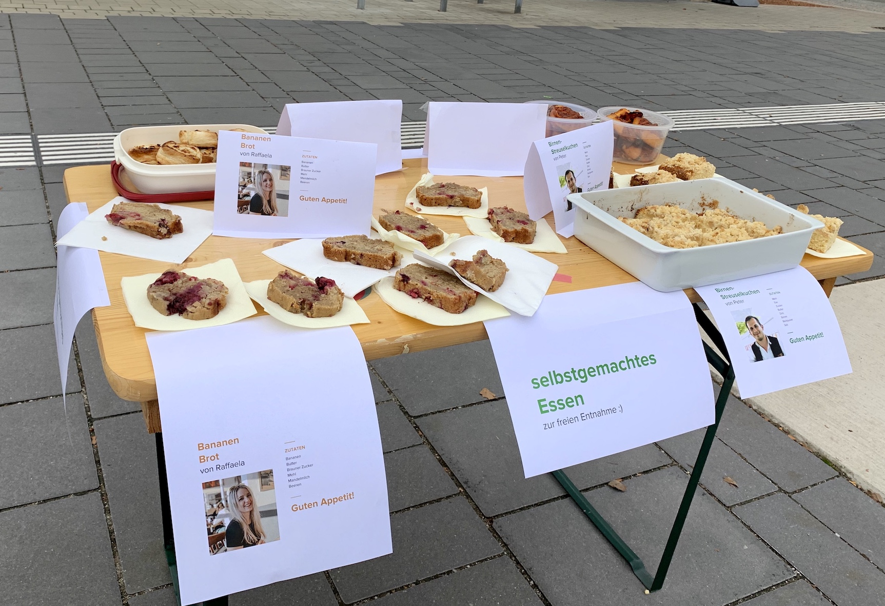
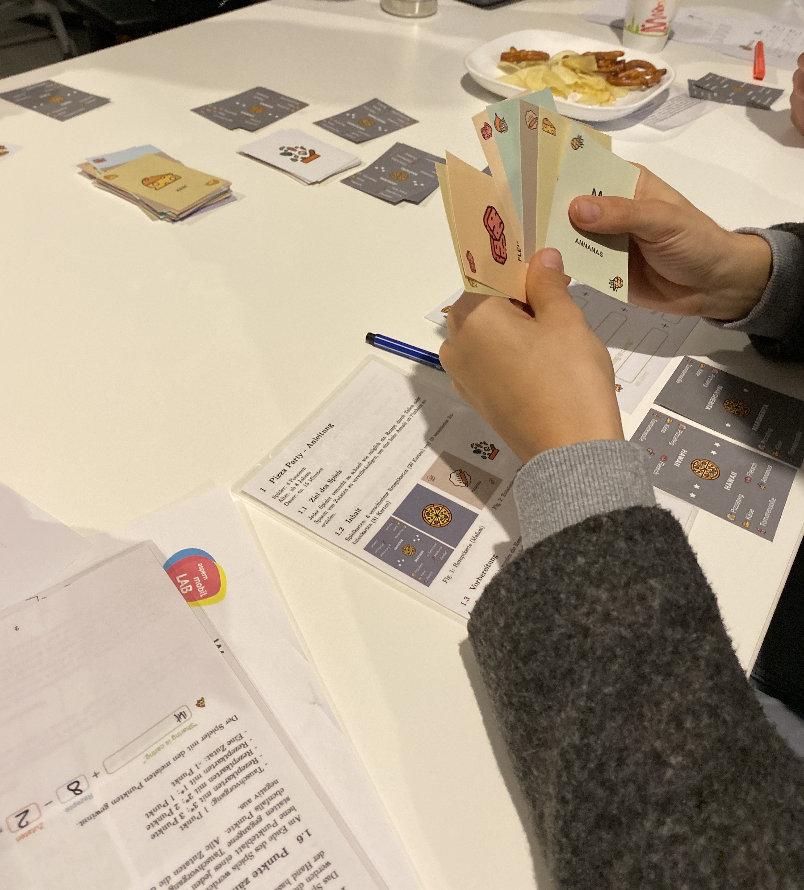
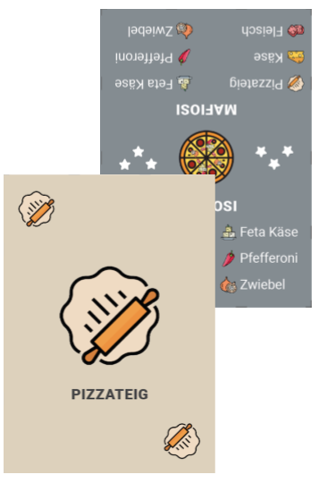
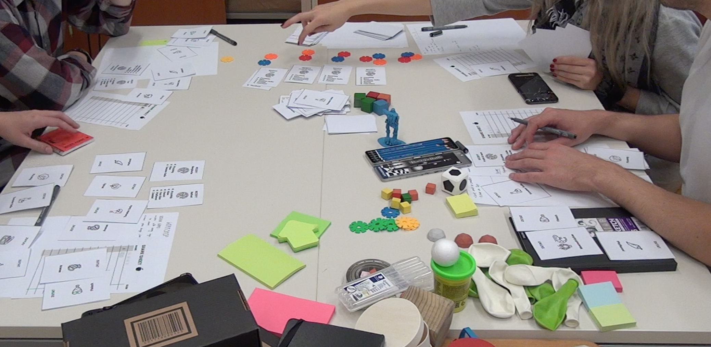
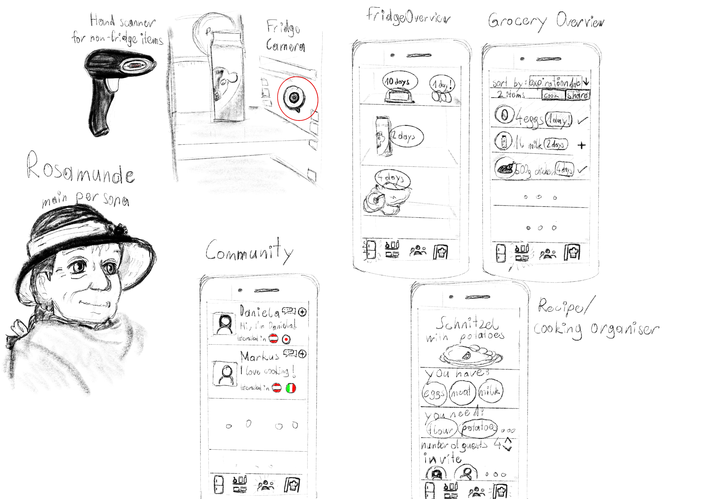

Foodiez
A university project about food sharing.
Short Introduction
 our roadmapFoodiez is a group project I am part of for the course "design thinking".
We aim to connect residents of the development project 'Seestadt Aspern' in Vienna's 22nd district. We want to
incentivize collaboration among residents by taking advantage of one of the most basic human needs and interests: food.
our roadmapFoodiez is a group project I am part of for the course "design thinking".
We aim to connect residents of the development project 'Seestadt Aspern' in Vienna's 22nd district. We want to
incentivize collaboration among residents by taking advantage of one of the most basic human needs and interests: food.
We started out with a literature research to get to know more about current projects and gather insights from the scientific community to tackle the overarching goal of our project: "creating the feeling that you are not alone". My literature research was concerned with the question of "How is loneliness affecting the elderly and how can a social participation application combat this?" and already yielded some interesting results. The next step for each of us was to interview an expert on the subject, in my case a computer scientist who has done a lot of research in assistive devices for the disabled and old and he specialized in the field of assistive robotics and smart assistive environments for the elderly (AAL).
Provocative requisite
The deployment of two provocative requisites represented our first real contact with residents of Seestadt Aspern, the main target group of our project. We placed several artifacts in one of the livelier streets of the neighborhood and observed them from distance. By doing that, we anticipated gaining insights in to the mindsets, open-mindedness and levels of trust of the residents.  We conducted our experiment in late October in a rather lively corner of Seestadt Aspern. With our first requisite we wanted to test resident's general levels of trust towards other people or society in general. We set up an unattended table with a variety of home-cooked food and observed, if people were willing to eat food without knowing where it came from, thus placing a lot trust in the stranger who cooked it. Food sharing will be a central part of our project. However, food sharing can only flourish in an environment where people trust each other. That is why we were curious to find out how people would accept the food we cooked. The food stand was equipped with posters indicating that the food was home-cooked and free to take. Our overall impression of the results of the experiment are very positive. We were surprised how many people stopped and actually ate our food without any factual information on where the food came from or why it was there. The design of this requisite includes a park bank as well as another object which should explain the situation. The second object was especially in this case a sign, where the word "Tratschbank" was written on to. "Tratsch Bank" is German and means chit-chat bench. It should explain the situation and invite passengers to stop and sit down for a talk. This provocative object could be seen as a failure. However, it does reveal some interesting facts about today's society from which a lot can be learned. People do not directly have the urge to talk as long as they do not know the other person better and cannot establish a relation to them. However, if this is taken into consideration in the planned project, it is important to establish relationships between people. This could work for example by narrowing down the persons with reference to the location. People living in very close surroundings are more likely to work together than more distant citizens.
Design Game/Workshop
 With our design game "Pizza Party" we tried to collect more useful data and insights from the way people interact with our game, in order to be able to include them later in our development. "Pizza Party" helped us to gain insights on sharing processes and willingness to share. This game is based on sharing ingredients, therefore we wanted to find out more about the nature of sharing and its context. By designing a game where it is necessary to share if you want to win but also to calculate, we can see, if and when, they are sharing. With this game, it was interesting for us to see, if people are in general willing to share their ingredients and we can count how often they do so. The Design Game is an interesting technique which helped us to identify problems, propose solutions and generate novel ideas. The overall aim of this project is to find ways to help people to socialize and feel like a part of the community. We wanted that the game is connected to this goal. This, as well as creating a good game is a challenging task. The game was evolving all the time. It was very important to think not only about rules and cards but also about the whole background and our goal. By observing people during playing “Pizza Party” game but also by designing it we discovered a lot of interesting social behaviours. There is still place for improvement but we think that our game is entertaining and sophisticated. We play-tested the game during an event in Asper Seestadt to gather insights into the way how people share directly from the project's potential users.
We also conducted a design workshop where we developed to concept and goals of our design game further, under the supervision of our lecturers who acted as facilitators for the discussion. The goal of the workshop was to improve the design of the card game “Pizza Party”. We wanted to both create new rules, ideas related to the game and detail existing ones. It was important for us to develop a game which is entertaining and also by playing which we can observe social behaviours connected with sharing and community.
Scenarios
We developed two different interaction scenarios for our project to get a better idea of how people could potentially interact with our project and in what way. I mainly developed and conceptualized the first scenario with a persona, Rosamunde. Rosamunde is a 65 years old grandmother currently living on her own in a council housing in Seestadt. She retired a few years ago and her husband passed away recently. She is used to taking care of a big family household and cooking for several people.I conceptualized and sketched a prototype for her scenario. The hardware of the prototype consists of the aforementioned scanner and fridge camera. The hand scanner allows users to scan all items that are not stored in a fridge and the wide-angle lens camera provides users with a live feed of their fridge, also recognizing and listing each item with their expiration date. The software is segmented into different tabs. The first one informs users about the current status of the inside of their fridge. The "grocery overview" allows users to keep tabs of all their groceries and expiration dates. They can sort by different metrics, such as expiration date or name, and select each item they want to share or use for a cooking get-together. The "community" section lets users get in touch with each other and get to know about them with a short introduction and the cuisines they like. They can follow, message or invite someone that caught their interest. The final recipe section lets user choose a recipe they want to use for a cooking get-together. They are recommended based on their current ingredients and interests. Users can also search for other get-togethers they can join or create their own one, as pictured in the sketch in the lower right. They are informed about the ingredients they have, what they are missing and can invite people they already connected with. 
Closing Thoughts
It was very fun to develop and shape our idea of a foodsharing platform over the course of the semester. We learned and employed different interesting tools from the "design thinking"
toolbox, like design games and scenarios. Next semester, we are going to implement our idea and might even get the chance to do so in cooperation with people from the municipality of Seestadt.
So, stay tuned and if you want to know more about the project, feel free to send me an Email or ping me on my social media listed below!